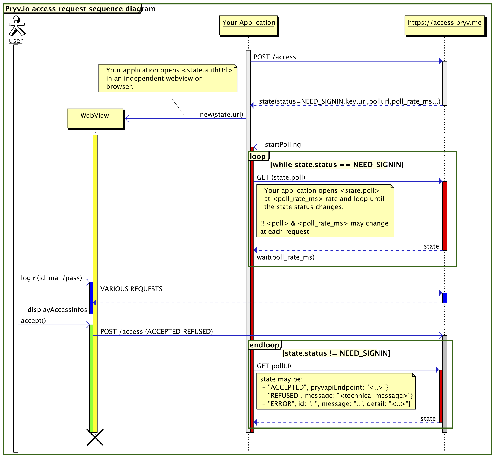

App authorization flow
Custom
Implementing the authorization process and obtaining an access token all by yourself.
Steps:
- start an access request by calling POST https://access.pryv.io/access
- open response.url in a webview
- poll response.pollurl until you get the an ACCEPTED / REFUSED or ERROR status
Sequence diagram

Json Examples
You can reporoduce this examples and try other combinations from https://sw.pryv.li/access/test.html
Access request
request: POST https://reg.pryv.io/access
payload:
{
"requestingAppId": "web-page-test",
"requestedPermissions": [
{
"streamId": "diary",
"defaultName": "Journal",
"level": "read",
},
{
"streamId": "notes",
"level": "manage",
"defaultName": "Notes"
},
{
"streamId": "position",
"defaultName": "Position",
"level": "read"
},
{
"streamId": "iphone",
"level": "manage",
"defaultName": "iPhone"
}
],
"languageCode": "en",
"returnURL": false
}
response:
{
"status": "NEED_SIGNIN",
"code": 201,
"key": "dXRqBezem8v3mNxf",
"requestingAppId": "web-page-test",
"requestedPermissions": [
{
"streamId": "diary",
"defaultName": "Journal",
"level": "read",
},
{
"streamId": "notes",
"level": "manage",
"defaultName": "Notes"
}
},
{
"streamId": "position",
"defaultName": "Position",
"level": "read"
}
],
"url": "https://sw.pryv.io:2443/access/v1/access.html?lang=en&key=dXRqBezem8v3mNxf&requestingAppId=web-page-test&returnURL=false&domain=pryv.io®isterURL=https%3A%2F%2Freg.pryv.io%3A443&requestedPermissions=%5B%7B%22streamId%22%3A%22diary%22%2C%22defaultName%22%3A%22Journal%22%2C%22level%22%3A%22read%22%2C%22folderPermissions%22%3A%5B%7B%22streamId%22%3A%22notes%22%2C%22level%22%3A%22manage%22%2C%22defaultName%22%3A%22Notes%22%7D%5D%7D%2C%7B%22streamId%22%3A%22position%22%2C%22defaultName%22%3A%22Position%22%2C%22level%22%3A%22read%22%2C%22folderPermissions%22%3A%5B%7B%22streamId%22%3A%22iphone%22%2C%22level%22%3A%22manage%22%2C%22defaultName%22%3A%22iPhone%22%7D%5D%7D%5D",
"poll": "https://reg.pryv.io:443/access/dXRqBezem8v3mNxf",
"returnURL": false,
"poll_rate_ms": 1000
}
Polling
request: GET https://reg.pryv.io/access/dXRqBezem8v3mNxf
3 response codes:
1 response: NEED_SIGNIN
Content is the same than for the initial POST request. poll and poll_rate_ms may vary
2 response: 200 ACCEPTED
{
"status": "ACCEPTED",
"username": "jondoe",
"token": "VTR7DOKN1J",
"code": 200
}
3 response: 403 REFUSED
{
"status": "REFUSED",
"reasonID": "REFUSED_BY_USER",
"message": "access refused by user",
"code": 403
}
Introduction
Get an access token.
TODO what is an access token and why do I need it?
Initial requirements
1. Get a Pryv app id for your app
A Pryv app id is a string uniquely identifying your app. For the moment, just ask us to obtain your app id.
2. Define the access permissions you need
See the examples below, as well as the permissions property in the access data structure reference.
Example app permissions
A "contribute" access on the "diary" stream:
[{
"streamId" : "diary",
"defaultName" : "Journal",
"level" : "contribute"
}]
A "manage" access to the "notes" and "mood" folders of the "diary" channel:
[{
"streamId" : "diary",
"defaultName" : "Journal",
"level" : "read",
},
{
"streamId" : "notes",
"level" : "manage",
"defaultName" : "Notes"
},
{
"streamId" : "mood",
"level" : "manage",
"defaultName" : "Mood"
}
}]
About the defaultName property: defaultName is the name you'd like the stream to be created with if it does not exist, and should be in the language of the user. The property is mandatory.
Web app (Javascript)
Obtaining an access token for your web app.
What you need
- make sure you got the initial requirements ready.
- include the following script in your page:
- From github:
<script type="text/javascript" src="//pryv.github.io/lib-javascript/latest/pryv.js"></script> - or the optimized CloudFront cache: (recommended)
<script type="text/javascript" src="//dlw0lofo79is5.cloudfront.net/lib-javascript/latest/pryv.js"></script>
- From github:
- construct a
settingsJSON object - call
Pryv.Auth.setup(settings)
For a more fleshed-out example look at the source code of http://jsfiddle.net/pryv/fr4e834p/.
Or make your own tests from the page: https://sw.pryv.li:2443/access/test.html
Example: Minimalistic
This app requests a "contribute" access to the "diary" stream, using the PrYv button and a popup for sign-in.
TODO: review this code
<!DOCTYPE html>
<html>
<head>
<title>Minimalistic example</title>
<script type="text/javascript" src="//d3gblc8a9weyfb.cloudfront.net/access/v1/pryv-sdk.js"></script>
</head>
<body>
<script type="text/javascript">
function callMeWithCredentials(username, appToken, languageCode) {
alert("SUCCESS! username:" + username + " appToken:" +
appToken + " language:" + languageCode);
}
var requestedPermissions = [{"streamId" : "diary",
"defaultName" : "Diary", // this name is localized
"level" : "contribute"}];
Pryv.Auth.setup({
requestingAppId : 'pryv-mini-example',
requestedPermissions : requestedPermissions,
returnURL: 'auto#',
spanButtonID : 'pryvButton',
callbacks : {
initialization : function() { },
needSignin : function(popupUrl, pollUrl, pollRateMs) { },
accepted : function(username, appToken, languageCode) {
console.log("** SUCCESS! username:" + username +
" appToken:" + appToken +
" lang:" + languageCode);
},
refused: function(reason) {
console.log("** REFUSED! " + reason);
},
error: function(code, message) {
console.log("** ERROR! " + code + " " + message);
}
});
</script>
<span id='pryvButton'></span>
</body>
</html>
Pryv.Auth.setup(settings)
The settings object supports the following parameters:
requestingAppId(string): Unique. Given by PrYv identifier for this app. It will be the key for the requested set of permission after user agreement.languageCode(2 characters ISO 639-1 Code): Optional. If known the current language used by the user. This will influence the signin and register interface language.requestedPermissions(object): The requested set of permissions to access user's streams.returnURL(url or 'auto'): Optional. If you don't want (or can't have) the popup signin-process and prefer set a returnURL. This URL will be called at the en of the SIGNIN process.This provides a better user experience on mobile devices. Details: settings.returnURL spanButtonID(string) Optional. The id of a<span />element in the DOM of your web page. Details: settings.spanButtonIDcallbacks(functionS): called on each step of the sign-in process. Most of them are optional if you decided to rely on PrYv signin Button. All are optional excepted "accepted". Details: settings.callbacksinitialization(function()): When the initialization process is started. You may display a "loading" animation or for the user.needSignin(function(popupUrl,pollUrl,pollRateMs)): Optional. Triggered when the user need to be redirected to PrYv Signin or register from.- param
popupUrl(string): The URL to open in it's own window and to present to the user. - param
pollUrl(string): The URL to poll regularly in the background to grab the result of the sigin process. - param
pollRateMs(int): The minimum interval in milliseconds between to polling.
- param
accepted(function(username,appToken,languageCode)): Mandatory. Called when the signin process succeed and the permissions requested a granted. It's also triggered after a logout action with(false,false,false)as parameters.refused(function(reason)): called when the user refuse to grant the requested permissions.- param
reason(string): Technical information on how the user refused (not to be displayed).
- param
error(function(pryvError)): called when an error interupting the signup process occured.- param
pryvError(object):{id: .., message: .., detail: ..}
- param
settings.returnURL : Popup or URL Callback
During the authentication process, we need to open a PrYv access web page in a separate window. This is in order to secure personal user's information.
This window can be opened in:
- A popup, leaving the actual window open behind. This should be more comfortable on desktop browsers.
- In place of the actual window, the user goes thru the process and come back to the URL you set at the end of the process.
* Popup
If you want the authorization process to take place in a popup just set the returnURL settings to false.
* Self or Auto
If you want the authorization process to take place in the same windows, returning to this same exact url you can use self[extra_params]<trailer> or auto[extra_params]<trailer>.
When the user returns to this same page, the pryv-access-sdk will parse prYv parameters.
- command
- self: Use the current page as returnURL value
- auto: (prefered method) Use a returnURL when a mobile or tablet browser is detected and a popupOtherwise
- parameters
- <trailer>: one of
?, a#or a& - [extra_parms]: Use this space (uri_encoded) as a custom payload for the returning user.
- <trailer>: one of
EXAMPLES
with
https://mysite.com/page.phpas source URL.- self# ->
https://mysite.com/page.php#prYvkey=JDJKhadja&prYvstatus=... - self? ->
https://mysite.com/page.php?prYvkey=JDJKhadja&prYvstatus=... - self?mycustom=A& ->
https://mysite.com/page.php?mycustom=A&prYvkey=JDJKh... - auto?mobile=1& (if mobile) ->
https://mysite.com/page.php?mobile=1&prYvkey=JD...
- self# ->
with
https://mysite.com/page.php?mycustom=1as source URL.- self& ->
https://mysite.com/page.php?mycustom=1&prYvk...
- self& ->
Make your own tests from the test page.
* Custom
Set the return URL to your own page such as
https://www.mysite.com/end-of-Pryv.Access-process.php?
Attention!! The url submitted must end with a ?, a # or a &
Returned status will be appended to this URL.
Examples of return URL
ACCEPTED
https://www.mysite.com/end-of-Pryv.Access-process.php?
prYvkey=GSbdasjgdv&prYvstatus=ACCEPTED&prYvusername=yacinthe&prYvtoken=VVhjDJDDG
REFUSED
https://www.mysite.com/end-of-Pryv.Access-process.php?
prYvkey=GSbdasjgdv&prYvstatus=REFUSED&prYvmessage=refused+by+user
ERROR
https://www.mysite.com/end-of-Pryv.Access-process.php?
prYvkey=GSbdasjgdv&prYvstatus=ERROR&prYvid=INTERNAL_ERROR&prYvmessage=...
settings.spanButtonID : Rely on PrYv standard Button
TODO
settings.callbacks Custom handling of the signin process
TODO
Pryv.Access.popupLogin()
Once setup is done, you can trigger the populLogin window from your own button. Note: Trigger it from a user-click event.
Pryv.Access.logout()
Once setup is done, and user logged in. Erase current credential and restart setup with the same settings.
logout() will trigger a settings.callbacks.success(false,false,false);
Pryv.Access.retry()
If a user refused to grant access, restart the setup process with the same settings.